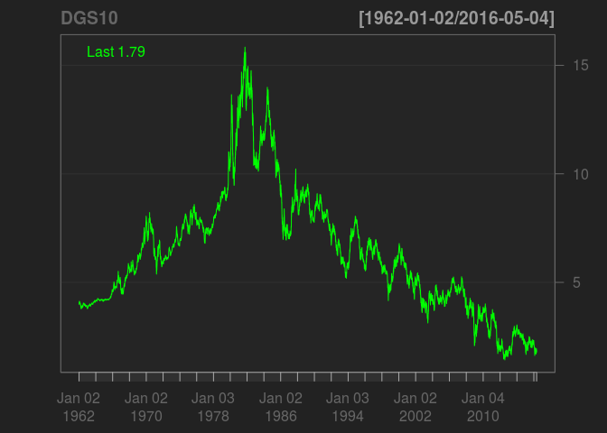

Chapter 4 Get Symbols
We start off by loading basic_symbols() into the symbols variable:
print(basic_symbols())## [1] "IWM" "QQQ" "SPY"symbols <- basic_symbols()getSymbols() is part of the quantmod package which was automatically loaded when we loaded quantstrat. It should have been installed automatically when you install quantstrat.
We send a request through getSymbols() to download data. We can use any of the following sources:
Yahoo!
Google
MySQL
RData
CSV
For data other than stocks we can use:
FRED (Federal Reserve Economic Data) source; FRED contains data such as unemployment, GDP, treasury rates and more.
OANDA is a subscription-service for forex and currency data.
4.1 Yahoo!
getSymbols(Symbols = symbols,
src = "yahoo",
index.class = "POSIXct",
from = start_date,
to = end_date,
adjust = adjustment)## As of 0.4-0, 'getSymbols' uses env=parent.frame() and
## auto.assign=TRUE by default.
##
## This behavior will be phased out in 0.5-0 when the call will
## default to use auto.assign=FALSE. getOption("getSymbols.env") and
## getOptions("getSymbols.auto.assign") are now checked for alternate defaults
##
## This message is shown once per session and may be disabled by setting
## options("getSymbols.warning4.0"=FALSE). See ?getSymbols for more details.## [1] "IWM" "QQQ" "SPY"The first thing you notice is the warning message. As it states, it will only appear the first time you run getSymbols() in a new session.
Symbols: one or a vector of multiple symbols.
src: string, our source. In this case, Yahoo!
index.class: POSIXct. This sets the class of our xts object index.
from: string, first date of data we want to retrieve
end: string, last date of data we want to retrieve
adjust: boolean, whether to adjust our data or not. Suggested to set as TRUE.
getSymbols will load xts objects for each of the symbols we passed into our Global Environment. We can view the data as we would any other dataset.
head(IWM)## IWM.Open IWM.High IWM.Low IWM.Close IWM.Volume IWM.Adjusted
## 2008-01-02 74.03150 74.37176 72.51490 73.06905 94259600 66.70117
## 2008-01-03 73.17598 73.51625 71.97048 72.26213 78036800 65.96457
## 2008-01-04 71.20245 71.28996 69.61780 70.08445 123498600 63.97667
## 2008-01-07 70.26916 70.82330 69.09283 70.24000 139672900 64.11867
## 2008-01-08 70.30805 71.23162 68.07203 68.07203 157222700 62.13964
## 2008-01-09 67.98454 69.02477 66.71099 68.76229 140191600 62.76974tail(IWM)## IWM.Open IWM.High IWM.Low IWM.Close IWM.Volume IWM.Adjusted
## 2009-12-23 62.70 63.16 62.28 63.12 49503600 57.61916
## 2009-12-24 63.29 63.39 63.13 63.36 16521900 57.83825
## 2009-12-28 63.59 63.61 62.97 63.26 35784500 57.74696
## 2009-12-29 63.42 63.53 63.18 63.23 24085300 57.71958
## 2009-12-30 63.04 63.49 62.65 63.19 45268900 57.68306
## 2009-12-31 63.23 63.57 62.26 62.44 34407900 56.99842summary(IWM)## Index IWM.Open IWM.High
## Min. :2008-01-02 00:00:00 Min. :34.28 Min. :35.17
## 1st Qu.:2008-07-02 00:00:00 1st Qu.:48.31 1st Qu.:49.42
## Median :2008-12-31 00:00:00 Median :58.88 Median :59.42
## Mean :2008-12-31 20:46:05 Mean :57.83 Mean :58.65
## 3rd Qu.:2009-07-02 00:00:00 3rd Qu.:68.03 3rd Qu.:69.02
## Max. :2009-12-31 00:00:00 Max. :77.14 Max. :84.11
## IWM.Low IWM.Close IWM.Volume IWM.Adjusted
## Min. :33.81 Min. :33.94 Min. : 50600 Min. :30.98
## 1st Qu.:47.48 1st Qu.:48.44 1st Qu.: 51197500 1st Qu.:44.22
## Median :58.13 Median :58.72 Median : 69790800 Median :53.60
## Mean :56.94 Mean :57.81 Mean : 77115884 Mean :52.77
## 3rd Qu.:67.24 3rd Qu.:68.14 3rd Qu.: 96282200 3rd Qu.:62.21
## Max. :72.80 Max. :74.20 Max. :355117000 Max. :67.73# Clear symbols
rm(list=basic_symbols())4.2 Google
getSymbols(Symbols = symbols,
src = "google",
index.class = "POSIXct",
from = start_date,
to = end_date,
adjust = adjustment)## [1] "IWM" "QQQ" "SPY"We access data from Google same as Yahoo! only changing the src parameter.
head(IWM)## IWM.Open IWM.High IWM.Low IWM.Close IWM.Volume
## 2008-01-02 76.15 76.50 74.59 75.16 90414700
## 2008-01-03 75.27 75.62 74.03 74.33 72688600
## 2008-01-04 73.24 73.33 71.61 72.09 6932200
## 2008-01-07 72.28 72.85 71.07 72.25 36734900
## 2008-01-08 72.32 73.27 70.02 70.02 47046500
## 2008-01-09 69.93 71.00 68.62 70.73 23320600tail(IWM)## IWM.Open IWM.High IWM.Low IWM.Close IWM.Volume
## 2009-12-23 62.70 63.16 62.28 63.12 49507902
## 2009-12-24 63.29 63.39 63.13 63.36 16522449
## 2009-12-28 63.59 63.61 62.97 63.26 35791114
## 2009-12-29 63.42 63.53 63.18 63.23 24085986
## 2009-12-30 63.04 63.49 62.65 63.19 45268923
## 2009-12-31 NA NA NA 62.44 0summary(IWM)## Index IWM.Open IWM.High IWM.Low
## Min. :2008-01-02 Min. :34.73 Min. : 35.64 Min. :34.26
## 1st Qu.:2008-07-01 1st Qu.:48.98 1st Qu.: 49.92 1st Qu.:48.10
## Median :2008-12-30 Median :59.12 Median : 59.73 Median :58.37
## Mean :2008-12-31 Mean :58.83 Mean : 59.81 Mean :57.92
## 3rd Qu.:2009-07-01 3rd Qu.:69.92 3rd Qu.: 70.90 3rd Qu.:69.05
## Max. :2009-12-31 Max. :78.92 Max. :159.46 Max. :74.59
## NA's :1 NA's :1 NA's :1
## IWM.Close IWM.Volume
## Min. :34.39 Min. : 0
## 1st Qu.:49.06 1st Qu.: 40761287
## Median :59.02 Median : 57575055
## Mean :58.81 Mean : 57593828
## 3rd Qu.:69.96 3rd Qu.: 74991155
## Max. :76.20 Max. :160640196
## # Clear symbols
rm(list=basic_symbols())4.3 MySQL
getSymbols(Symbols = symbols,
src = "MySQL",
dbname = db,
user = user,
password = pw,
host = host,
index.class = "POSIXct",
from = start_date,
to = end_date,
adjust = adjustment)## [1] "IWM" "QQQ" "SPY"To load data via MySQL database we need to supply additional parameters: dbname, user, password and host. user needs to have SELECT privileges but nothing more for our purposes.
getSymbols() does not currently permit passing database values via a my.cnf file. The parameters are checked early in the function so either you need to include them in the call or include them in a hidden R file outside of your project directory and source the file.
Your database should contain a table named by symbol, one for each symbol. Each table should have the following fields: date, o, h, l, c, v and a. If your table has different field names you must add them to the db.fields parameter as a character vector.
You can also change the names of the fields as they are imported into R by using the field.names parameter. However, none of that is required as long as db.fields meets the default criteria.
The data in my database is a duplicate of Yahoo!. The output below is to show the success of the getSymbols(src="MySQL") call.
head(IWM)## IWM.Open IWM.High IWM.Low IWM.Close IWM.Volume IWM.Adjusted
## 2008-01-02 74.03150 74.37176 72.51490 73.06905 94259600 66.70117
## 2008-01-03 73.17598 73.51625 71.97048 72.26213 78036800 65.96457
## 2008-01-04 71.20245 71.28996 69.61780 70.08445 123498600 63.97667
## 2008-01-07 70.26916 70.82330 69.09283 70.24000 139672900 64.11867
## 2008-01-08 70.30805 71.23162 68.07203 68.07203 157222700 62.13964
## 2008-01-09 67.98454 69.02477 66.71099 68.76229 140191600 62.76974tail(IWM)## IWM.Open IWM.High IWM.Low IWM.Close IWM.Volume IWM.Adjusted
## 2009-12-23 62.70 63.16 62.28 63.12 49503600 57.61916
## 2009-12-24 63.29 63.39 63.13 63.36 16521900 57.83825
## 2009-12-28 63.59 63.61 62.97 63.26 35784500 57.74696
## 2009-12-29 63.42 63.53 63.18 63.23 24085300 57.71958
## 2009-12-30 63.04 63.49 62.65 63.19 45268900 57.68306
## 2009-12-31 63.23 63.57 62.26 62.44 34407900 56.99842summary(IWM)## Index IWM.Open IWM.High IWM.Low
## Min. :2008-01-02 Min. :34.28 Min. :35.17 Min. :33.81
## 1st Qu.:2008-07-02 1st Qu.:48.31 1st Qu.:49.42 1st Qu.:47.48
## Median :2008-12-31 Median :58.88 Median :59.42 Median :58.13
## Mean :2008-12-31 Mean :57.83 Mean :58.65 Mean :56.94
## 3rd Qu.:2009-07-02 3rd Qu.:68.03 3rd Qu.:69.02 3rd Qu.:67.24
## Max. :2009-12-31 Max. :77.14 Max. :84.11 Max. :72.80
## IWM.Close IWM.Volume IWM.Adjusted
## Min. :33.94 Min. : 50600 Min. :30.98
## 1st Qu.:48.44 1st Qu.: 51197500 1st Qu.:44.22
## Median :58.72 Median : 69790800 Median :53.60
## Mean :57.81 Mean : 77115884 Mean :52.77
## 3rd Qu.:68.14 3rd Qu.: 96282200 3rd Qu.:62.21
## Max. :74.20 Max. :355117000 Max. :67.73# Clear symbols
rm(list=basic_symbols())4.4 FRED
For this example we’ll bail on the symbols we have been using prior. FRED contains over 11,000 econonomic datasets at no cost.
Let’s look at the 10-Year Treasury Rate:
Notice the tail of the url has the alphanumeric string DGS10 which we will be using in our getSymbols() call.
getSymbols(Symbols = "DGS10", src = "FRED")## [1] "DGS10"Notice our call is shorter than previous; we do not need to classify index nor do we need to adjust any data.
In addition, passing data parameters doesn’t seem to do anything; the entire dataset is returned.
I’ll use quantmod::chartSeries() to plot the data:
chartSeries(DGS10)
rm(DGS10)4.5 OANDA
Contributions needed.